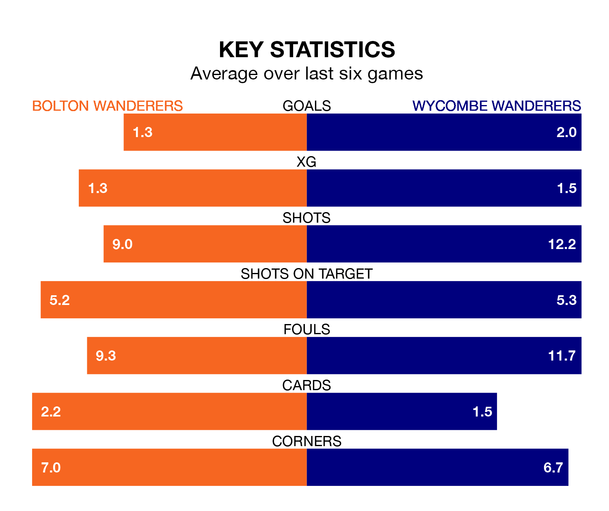

Bolton Wanderers are heavy favourites to keep all three points at home in Tuesday's late kick-off against Wycombe Wanderers.
Bolton, who sit third in EFL League One with 29 games played, are priced at 1.6 to seal victory at the University of Bolton Stadium.
Sitting 13 places and 22 points behind them in the table, Wycombe are 5.0 to win with *Betting Company*, while the draw is at 3.5.
With 52 goals in 29 games so far this season, Bolton are scoring more than average in the league with 1.8 goals per game. And they are conceding fewer than average, letting in 28 goals at a rate of 1.0 per game.
Wycombe, meanwhile, are average scorers, with 1.3 goals per game. They have conceded 1.4 goals per game.
With Nathan Baxter between the sticks, Bolton Wanderers can rely on one of the league's safest pair of hands. He has kept 12 clean sheets in his 28 appearances this season, and only one other 'keeper – Portsmouth's Will Norris – has been able to prevent the opposition scoring on more occasions in EFL League One.
In Wycombe Wanderers' net, Maksymilian Stryjek has six clean sheets in 30 games. He has conceded a goal every 84 minutes, 20% more often than the 101 minutes between goals for Baxter.
In the last 10 years, Bolton and Wycombe have played each other on seven occasions. Bolton won two of them and Wycombe five.
On average, Bolton scored 1.0 goal and the Chairboys 1.4 in those matches.
Their last meeting was on October 24, when Bolton won 4-2 away.
The home side are in reasonable form in EFL League One, with three wins and two draws from their last six games.
With two wins and three draws over that period, the Chairboys' form is slightly worse – they have taken nine points from 18, compared to Bolton's 11.
Bolton's last match was on Saturday, a 1-1 draw against Northampton Town, with Carlos Mendes Gomes getting the goal for Bolton.
Wycombe beat Peterborough United 5-2 last time out, also on Saturday, with Archie Collins (own goal), David Wheeler, Jack Grimmer, Kieran Sadlier and Nicholas Bilokapic (own goal) on the scoresheet.
Tuesday's match will be refereed by Will Finnie, who has taken charge of 13 EFL League One games so far this season, issuing one red card and booking 47 players. He has awarded two penalties.
The last Bolton game Finnie refereed was a 3-0 home win against Lincoln City on August 5. His last Wycombe match was their 0-0 draw at home against Cambridge United on October 31.
Updated: 13:30 (UTC), 12/02/24